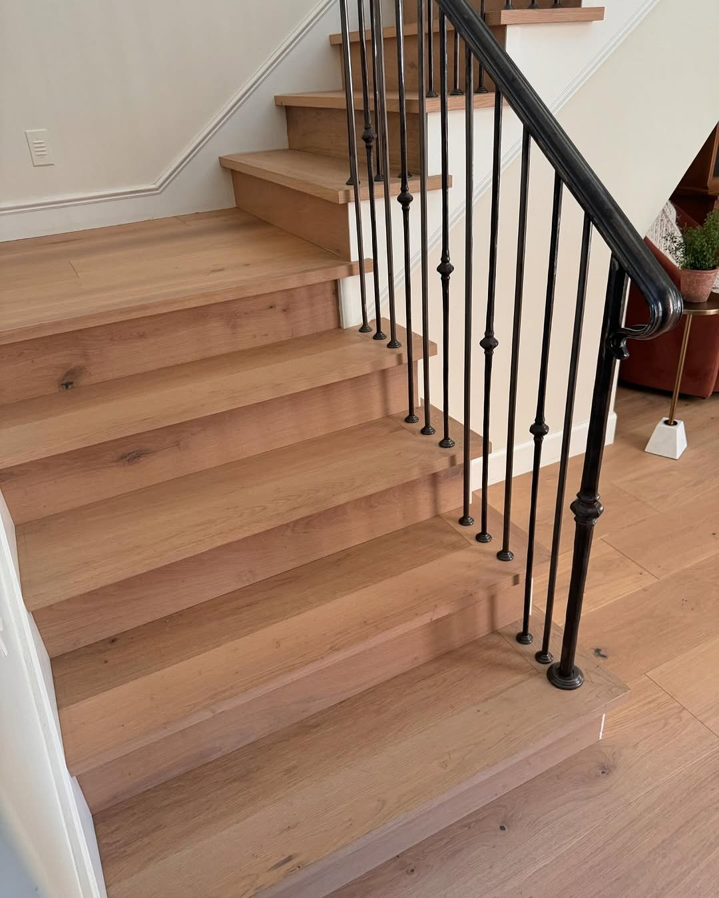
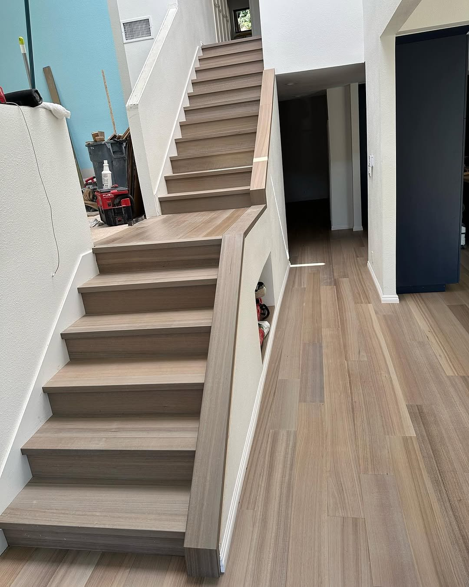

Custom Stair Installation
Custom stair installation in San Diego runs $4,200 to $14,000 for a standard 13-tread straight run, depending on tread material, riser style, and railing complexity. Our crew rebuilds 18 to 24 staircases a year across Rancho Santa Fe, La Jolla, and Valley Center, mostly oak treads on painted poplar risers.
Last updated: April 2026
Stair Treads, Risers & Transitions
Stairs are one of the most visible and high-traffic features in any multi-level home. They connect your living spaces and set the tone the moment someone walks in the front door. At Top Tier Custom Floors, we treat every staircase as a custom project -- not an afterthought. From tread selection and nosing profiles to riser cladding and LED integration, every detail is measured, cut, and installed with precision.
We have built and refinished staircases across San Diego County and North Orange County, from dramatic open-riser designs in Rancho Santa Fe to classic oak-clad flights in Escondido. Whether you are matching new stairs to an existing hardwood floor or creating a standalone statement piece, we bring the same level of craftsmanship to every step.

Tread Styles & Material Options
Every staircase is different. We match the material, profile, and finish to your home's design.
Material Matching
The most common request we get is matching stair treads to an existing floor. When the same species and finish are available, we source identical material so the transition from floor to staircase is seamless. When the original product has been discontinued or the existing floor has aged, we custom-stain new treads to blend. We bring samples to your home and compare under your specific lighting conditions before finalizing any stain match.
For new construction or full renovations, you have the full range of species to choose from. White oak, hickory, maple, and walnut are all popular choices. We also install laminate and LVP stair overlays for budget-conscious projects that still need to look sharp.
Nosing Profiles & Riser Options
The nosing -- the front edge of each tread that overhangs the riser -- has a bigger visual impact than most people realize. We offer bullnose, square-edge, and flush nosing profiles. Open-riser staircases (where there is no vertical board between treads) create a dramatic, modern look and are popular in contemporary homes throughout Del Mar and La Jolla. Closed risers can be clad in matching wood, painted white for contrast, or finished with a complementary material.

How Stair Installation Works
Measurement & Design Consultation
We measure every step individually because no two staircases are perfectly uniform, especially in older homes. We discuss tread width, nosing style, riser treatment, and whether you want any upgrades like LED lighting or open risers. If we are matching existing floors, we bring material samples for side-by-side comparison.
Removal & Subfloor Preparation
Existing carpet, tile, or worn treads are removed carefully. We inspect the stair stringers and substructure for any damage, squeaks, or structural issues. Loose areas are reinforced with construction adhesive and screws. The subfloor surface is cleaned and leveled so every tread sits perfectly flat.
Custom Cutting & Fitting
Each tread and riser is cut to the exact dimensions of its specific step. We template tight fits against walls and balusters so there are no gaps. Nosing profiles are routed or pre-milled to specification. For LED installations, we route channels under the nosing and pre-wire before the treads go down.
Installation & Finishing
Treads and risers are secured with construction adhesive and fasteners. We use pin nails and fill all holes so no fasteners are visible. Transitions between the staircase and the landing or hallway floor are finished with matching reducers or flush transitions. If LED lighting is part of the project, we complete the wiring and test every strip before the final walk-through.
LED Stair Lighting & Safety
LED stair lighting is one of the most impactful upgrades you can add to a staircase. We install LED strips under the nosing of each tread, creating a clean line of light that illuminates the step below. The effect is striking in the evening and serves a practical safety purpose, especially for families with young children or elderly members.
We wire the LEDs to a wall switch, dimmer, or motion sensor depending on your preference. All wiring is concealed behind the risers -- nothing is exposed or visible from the front. The LED strips we use are rated for 50,000+ hours and come in warm white, cool white, and tunable color temperatures.
Beyond lighting, we pay close attention to safety in every stair project. Proper nosing overhang, consistent riser height, and code-compliant tread depth are non-negotiable. We also coordinate with handrail installers to make sure the full staircase meets California building codes. A beautiful staircase that is not safe is not a job well done.
Stair Projects
Stair Installation FAQ
Stair flooring installation in San Diego typically costs between $80 and $200 per step for labor, depending on the material, tread style, and complexity of the staircase. Hardwood treads with custom nosing profiles run higher than laminate or LVP overlays. A full staircase of 12-15 steps usually falls between $1,500 and $3,500 for labor and materials combined. We provide detailed pricing after an in-home measurement so you know exactly what to expect.
Yes, matching stair treads to existing flooring is one of our specialties. We source the same species, grade, and finish whenever possible. If your floors have aged or the original product is discontinued, we custom-stain new treads to blend seamlessly. We bring samples to your home to compare under your lighting conditions before committing to a stain match.
A standard staircase of 12-15 steps takes 2-3 days to complete, including removal of existing material, subfloor prep, tread and riser installation, and finishing. Multi-level staircases or projects with LED integration may take 4-5 days. We plan the work so you always have safe access to both floors during the project.
We handle handrail and baluster coordination as part of the stair project. While our primary focus is the treads, risers, and transitions, we work with trusted millwork partners to replace or refinish handrails and balusters so everything matches. Whether you want a modern cable rail or classic wood spindles, we can coordinate the full staircase transformation.
Absolutely. LED stair lighting is one of the most popular upgrades we install. We integrate LED strips under the nosing of each tread for a clean, modern look that also improves safety in low-light conditions. The lighting can be wired to a dimmer switch or motion sensor. We route all wiring behind the risers so nothing is visible -- the light appears to float under each step.
More From Top Tier
Service Areas
We install custom flooring across San Diego County and North Orange County.
Ready for Custom Stairs?
Get a free estimate for your stair installation project. We serve San Diego, Escondido, Carlsbad, Rancho Santa Fe, Del Mar, Temecula, and throughout Orange County.
What is the 7-11 rule for stairs?
The 7-11 rule means a 7 inch riser paired with an 11 inch tread. California Residential Code lets you go up to 7.75 inches on the rise and as low as 10 inches on the run, but anything outside that gets flagged at inspection.
We see a lot of older Escondido and Vista homes with 8 inch risers built before the 1990s. When we rebuild those, the new geometry has to match current code, which usually means adding a tread and adjusting the landing.
How much does it cost to install stairs?
A straight run rebuild with red oak treads, painted risers, and a basic newel post starts around $4,200 in our service area. Add a curved bottom step, custom iron balusters, or a refinish of the existing handrail and you are quickly at $9,000 to $14,000.
The big cost drivers are tread species and railing. White oak treads run roughly 30 percent over red oak. Wrought iron balusters with a refinished walnut handrail can add $3,000 by themselves.
Do you match new treads to existing hardwood?
Yes. We site-finish the treads after install so the stain matches the upstairs and downstairs hardwood. That matters most in open Rancho Bernardo and Poway floor plans where the stairs sit between two large hardwood fields.
And factory-finished treads almost never match. The sheen is wrong, the bevels read different under recessed lights, and the color shift is obvious within a few weeks.